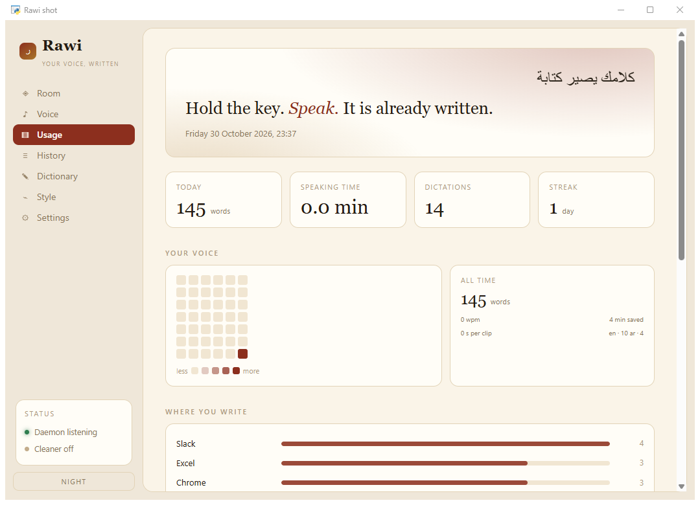
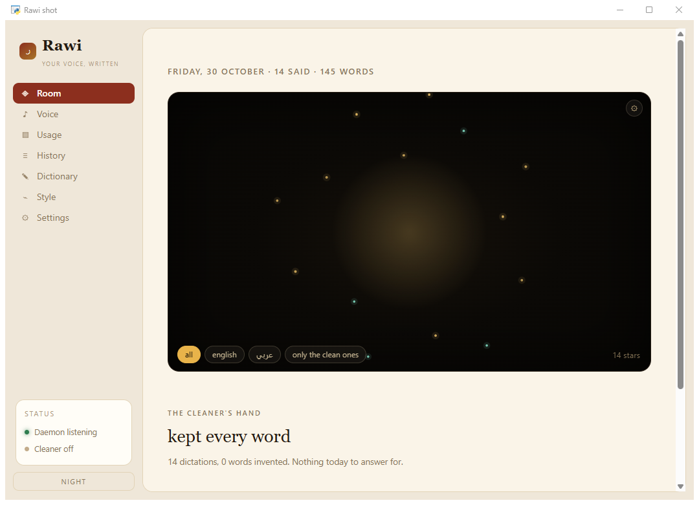

Dictation for Windows · Arabic and Englishإملاء صوتي لويندوز · عربي وإنجليزي
Hold the key. Speak. It's already written.
اضغط وتكلّم، وكلامك يصير كتابة.
rawi (راوي, the narrator) types what you say into whatever app you're in: WhatsApp, Word, Slack, your browser. Arabic, English, or both in the same sentence. It runs entirely on your own computer, so it's free, there's no account, and your voice never leaves your machine.
راوي يكتب اللي تقوله في أي برنامج فاتحه: واتساب، وورد، سلاك، المتصفح. عربي أو إنجليزي، أو الاثنين في نفس الجملة. يشتغل كله على جهازك، يعني مجاني، بدون حساب، وصوتك ما يطلع من جهازك أبدًا.
Free and open source (MIT) · Windows 10 and 11 · Needs Pythonمجاني ومفتوح المصدر (MIT) · ويندوز 10 و 11 · يحتاج بايثون
An illustration of the flow, not a screen recording. The waits are rawi's own numbers: under a second with a GPU, 8 to 11 seconds a line measured on a laptop CPU. هذا رسم توضيحي للفكرة، مو تسجيل شاشة. أوقات الانتظار من أرقام راوي نفسه: أقل من ثانية مع كرت شاشة، ومن 8 إلى 11 ثانية للسطر على معالج لابتوب.
What it doesوش يسوي
One line in, one paste out. That's the whole idea.تقول جملة، تنكتب. هذي الفكرة كلها.
Hold to talkاضغط وتكلّم
Hold the left Ctrl, speak, let go. The words land where your cursor is. Double-tap Ctrl to keep it listening hands-free.
اضغط Ctrl اليسار مطوّل، تكلّم، وارفع إصبعك. الكلام ينكتب مكان المؤشر. ضغطتين سريعة على Ctrl وتقدر تتكلم بدون ما تمسكه.
Arabic and English, mixedعربي وإنجليزي مع بعض
It works out which language each line is in, and doesn't flip halfway through your sentence. F10 locks it to one language when you want.
يعرف لغة كل جملة بنفسه، وما يقلب اللغة في نص كلامك. وإذا تبي لغة وحدة بس، F10 يثبتها.
Works in any appفي أي برنامج
It pastes at the cursor and puts your clipboard back afterwards. Landed in the wrong window? F9 pastes the last line again.
يلصق الكلام مكان المؤشر ويرجّع الحافظة مثل ما كانت. انكتب في النافذة الغلط؟ F9 يلصق آخر جملة مرة ثانية.
Stays on your computerيبقى على جهازك
It uses OpenAI's open Whisper model, running on your own machine. No account, no subscription, no uploads. History is off unless you turn it on.
يستخدم نموذج Whisper المفتوح من OpenAI، شغّال على جهازك أنت. بدون حساب، بدون اشتراك، وما يرفع شي. السجل مقفل إلا إذا شغّلته.
The hubالواجهة
rawi works without ever opening a window. If you want one, there's a hub with your history, a dictionary for names it should spell right, usage, and settings.راوي يشتغل بدون ما تفتح أي نافذة. وإذا تبي، فيه واجهة فيها السجل، وقاموس للأسماء اللي تبيه يكتبها صح، والاستخدام، والإعدادات.


Get it runningشغّله على جهازك
There's no installer yet, so this takes about ten minutes and a terminal. Each step is copy and paste.ما فيه مثبّت جاهز للحين، فتحتاج تقريبًا عشر دقايق وشاشة الأوامر (Terminal). كل خطوة نسخ ولصق.
- Windows 10 or 11ويندوز 10 أو 11
- Python 3.10 to 3.12بايثون من 3.10 إلى 3.12
- A microphoneمايك
- 0.5 GB free for the small model, about 1.5 GB for the large oneنص جيجا للنموذج الصغير، وحوالي 1.5 جيجا للكبير
- NVIDIA GPU: optional, much fasterكرت NVIDIA: اختياري، بس أسرع بكثير
Install Pythonثبّت بايثون
From python.org, version 3.12. In the installer, tick "Add python.exe to PATH" before you click Install.
من python.org، نسخة 3.12. في المثبّت، فعّل خيار "Add python.exe to PATH" قبل ما تضغط Install.
Download rawiحمّل راوي
Download the ZIP and unzip it somewhere you'll keep it, like your Documents folder. Or, if you use git:
حمّل ملف ZIP وفكّه في مكان بتخليه فيه، مثل مجلد المستندات. أو إذا تستخدم git:
git clone https://github.com/Yousifus/rawi.git
Install what it needsثبّت اللي يحتاجه
Open the rawi folder, right-click an empty spot, and choose Open in Terminal. Then paste:
افتح مجلد راوي، اضغط بالزر اليمين في مكان فاضي، واختر Open in Terminal. بعدين الصق:
python -m venv .venv .venv\Scripts\activate pip install -r requirements.txt copy config.example.json config.json
No NVIDIA GPU? Use the small modelما عندك كرت NVIDIA؟ استخدم النموذج الصغير
Most laptops are in this group. Open
config.jsonin Notepad and change these two lines, or rawi will try a large model that's far too slow without a GPU:أغلب اللابتوبات كذا. افتح
config.jsonفي المفكرة (Notepad) وغيّر هالسطرين، وإلا راوي بيحاول يشغّل النموذج الكبير وهو بطيء جدًا بدون كرت:"model": "small", "device": "cpu",
Check, then startافحص، وبعدين شغّل
The doctor checks your microphone, packages, model and paste path, and tells you exactly what's wrong if something is. Then start rawi:
الفحص يتأكد من المايك والحزم والنموذج والنسخ واللصق، وإذا فيه شي غلط يقولك وش هو بالضبط. بعدها شغّل راوي:
python rawi.py --doctor python rawi.py
The first start downloads the speech model once (about 0.5 GB for small). After that it needs no internet at all. Hold left Ctrl in any app and talk.
أول تشغيل ينزّل نموذج الكلام مرة وحدة (حوالي نص جيجا للصغير). بعدها ما يحتاج إنترنت أبدًا. اضغط Ctrl اليسار في أي برنامج وتكلّم.
Next timeالمرات الجاية
Double-click
start.batin the rawi folder. It uses the setup from step 3, and its window stays open while rawi is listening: close it to stop rawi. For the hub window instead, double-clickrawi-app.bat.اضغط مرتين على
start.batفي مجلد راوي. يستخدم اللي ثبّته في الخطوة 3، ونافذته تبقى مفتوحة طول ما راوي يسمع: سكّرها إذا تبي توقفه. وإذا تبي الواجهة بدلها، اضغط مرتين علىrawi-app.bat.
Honest limitsبصراحة
It's a first cut, built for daily use in two languages. Here's where it stands.هذي أول نسخة، مسوّاة للاستخدام اليومي بلغتين. هذا وضعها الحين.
Slow without a GPUبطيء بدون كرت شاشة
On a laptop CPU, expect 8 to 11 seconds per line, and about 23 seconds for the first one while the model warms up. Nothing gets lost while you wait: lines queue up and come out in order.
على معالج لابتوب، توقّع من 8 إلى 11 ثانية للجملة، وحوالي 23 ثانية لأول جملة لين يسخن النموذج. وما يضيع شي وأنت تنتظر: الجمل تصف بالدور وتنكتب بالترتيب.
Arabic needs the big modelالعربي يبي النموذج الكبير
On the small model, English comes out well and Arabic is weak. Arabic gets much better on the large model, which really wants an NVIDIA GPU.
على النموذج الصغير، الإنجليزي ممتاز والعربي ضعيف. العربي يتحسن كثير على النموذج الكبير، وهذا يبي كرت NVIDIA.
Windows only, for nowويندوز بس، حاليًا
There's code for Mac and Linux, but nobody has run it there day to day yet. If you try it on a Mac, tell me how it goes.
فيه كود للماك ولينكس، بس محد جرّبه عليهم يوميًا للحين. إذا جربته على ماك، قولي وش صار.
Not packaged, not benchmarkedبدون مثبّت، وبدون قياس دقيق
It needs Python and a terminal until there's a one-click installer. And it hasn't been measured against a reference on Saudi dialect yet. That's next.
يحتاج بايثون وشاشة أوامر لين يصير له مثبّت بضغطة وحدة. وما انقاس للحين على اللهجة السعودية مقابل نص مرجعي. هذا الجاي.
Privacy, plainlyالخصوصية، بوضوح
Audio stays in memory and is thrown away after it's written. Nothing is uploaded, there's no telemetry, and no update pings. This page has no analytics either, and loads nothing from anyone else.
الصوت يبقى في الذاكرة وينحذف بعد ما ينكتب. ما يترفع شي، وما فيه تتبّع ولا تحديثات تتصل بأحد. وحتى هذي الصفحة ما فيها أي تتبّع، وما تحمّل شي من أي جهة ثانية.